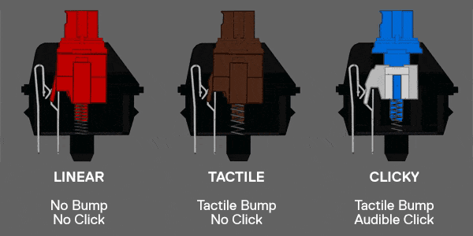
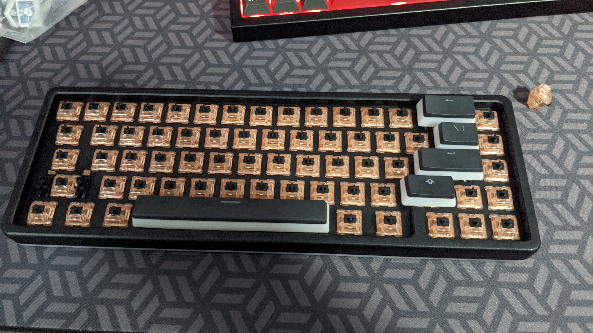

Mechanical keyboards use special key switches to provide a satisfying typing feel for the user. There are hundreds of types of switches to choose from to personalize the feel of your keyboard. Obviously covering every single switch ever created would be unrealistic, so here are the three main categories of switches:
Linear switches are smooth with no bump or click, tactile switches have a bump in the middle of the keypress, and clicky switches have a tactile bump as well as an audible click.
My favorite switches are tactile switches, so I will cover a few of that type. Click the links to learn about each type of switch!
